Welcome to the Batman and DC Universe
Explore the dark knight's world, allies, enemies, and the broader DC universe.
Learn MoreBatman's Origin
Bruce Wayne, a wealthy industrialist, witnessed the murder of his parents as a child. Swearing vengeance against criminals, he trained himself physically and intellectually to become Batman, a masked vigilante operating in Gotham City.
Key events in Batman's origin:
- Murder of Thomas and Martha Wayne
- Bruce's training around the world
- Return to Gotham and creation of the Batman persona
- Establishment of the Batcave and alliance with Alfred Pennyworth
Villains
The Joker
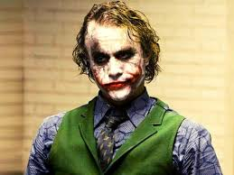Batman's archenemy, a criminal mastermind with a clown-like appearance and a sadistic sense of humor.
Two-Face
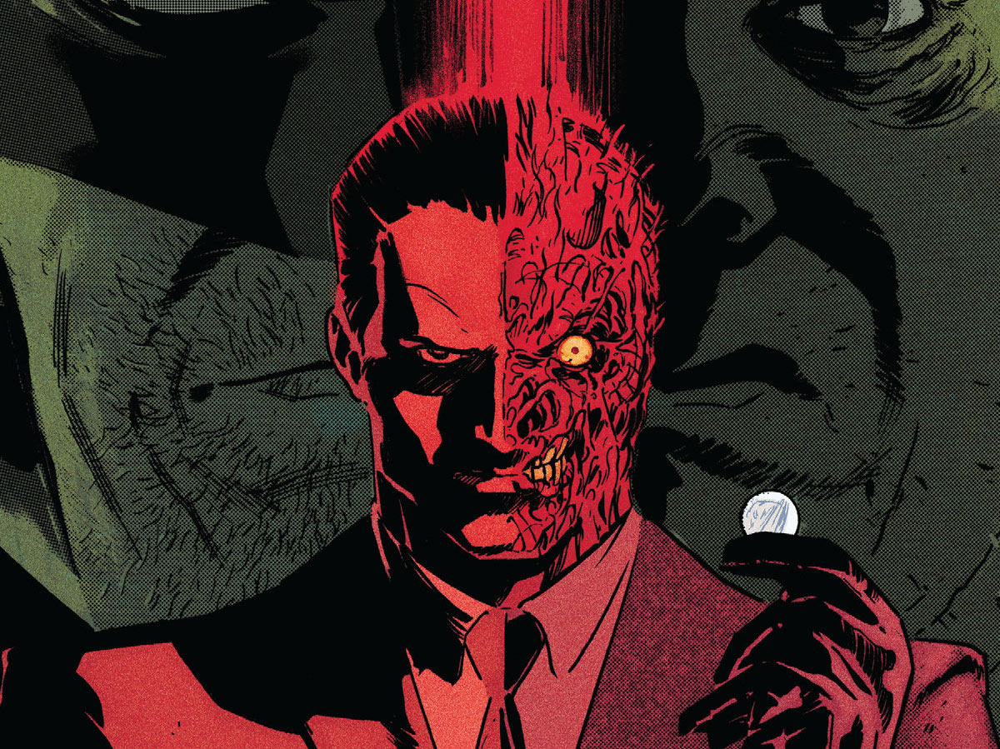Former Gotham City district attorney Harvey Dent, scarred on one side of his face, who makes decisions based on chance.
The Penguin
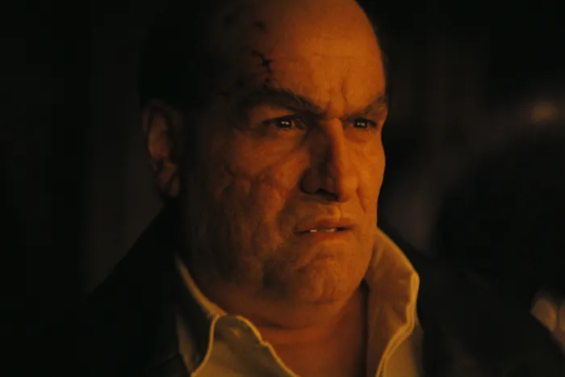The Penguin is a supervillain appearing in American comic books published by DC Comics, commonly as an adversary of the superhero Batman. The character made his first appearance in Detective Comics #58 and was created by Bob Kane and Bill Finger.
scarecrow
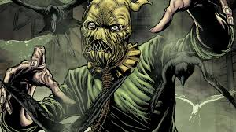The Scarecrow is a supervillain appearing in American comic books published by DC Comics. Created by Bill Finger and Bob Kane, the character first appeared in World's Finest Comics #3..
Bane

Born in a prison on a remote Caribbean island, Bane was raised without pity or compassion. As an adult, he served as a test subject for the super-steroid called Venom. Superhumanly strong, Bane escaped his hell and headed to Gotham City—where he chose to make his mark by defeating the Batman.
court of owls

The Court of Owls is a violent cabal of some of Gotham City's oldest and wealthiest families who use murder and money to wield political influence throughout history. To carry out their interests, they employ a breed of highly trained assassins known as Talons.
Black Mask

Black Mask is a supervillain appearing in comic books published by DC Comics. Created by Doug Moench and Tom Mandrake, the character debuted in Batman #386. He is commonly depicted as a brutal and ruthless crime lord in Gotham City who has a fixation with masks and derives sadistic pleasure from the act of torture
League of assassins
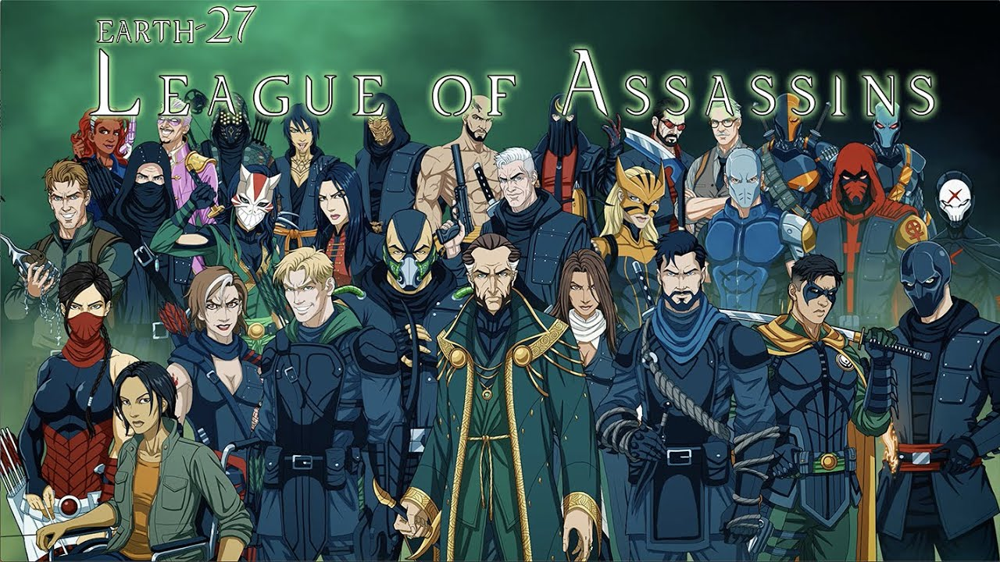The League of Assassins are a sect of highly trained warriors that act as bodyguards/mercenaries for the Brotherhood of the Demon criminal empire. They have sworn eternal loyalty to the man who calls himself Ra's al Ghul, the Head of the Demon.
Bat-Family
Night Wing

Batman's sidekick, with multiple individuals taking on the role over time, including Dick Grayson, Jason Todd, and Tim Drake. When his circus acrobat family was brutally murdered, Dick Grayson was taken in by billionaire and bat-friendly super hero Bruce Wayne. Bruce shared his secret life as Batman with the young boy and eventually molded him into Robin—the Dark Knight's partner in Gotham.
Batgirl
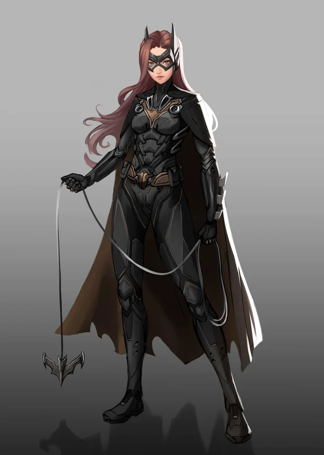Barbara Gordon taking over from her father Jim Gordon to become the new Police Commissioner of Gotham. Towards the end of the film, she dons her cowl and teams up with Batman as Batgirl in addition to her role as Commissioner..
Alfred Pennyworth
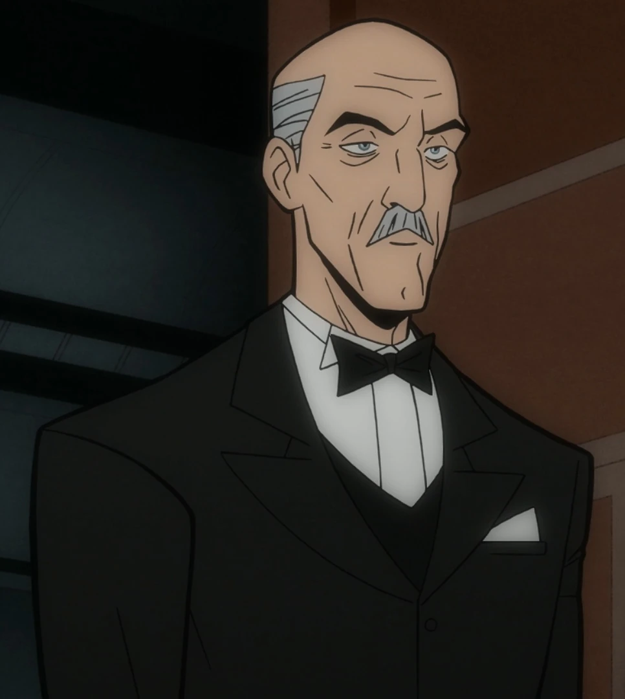The Pre-Crisis comics (the comics that were published by DC Comics between 1938 and 1984) established Alfred as a retired actor and intelligence agent who followed the deathbed wish of his dying father (identified only as "Jarvis") to carry on the tradition of serving the Wayne family..
Red Hood
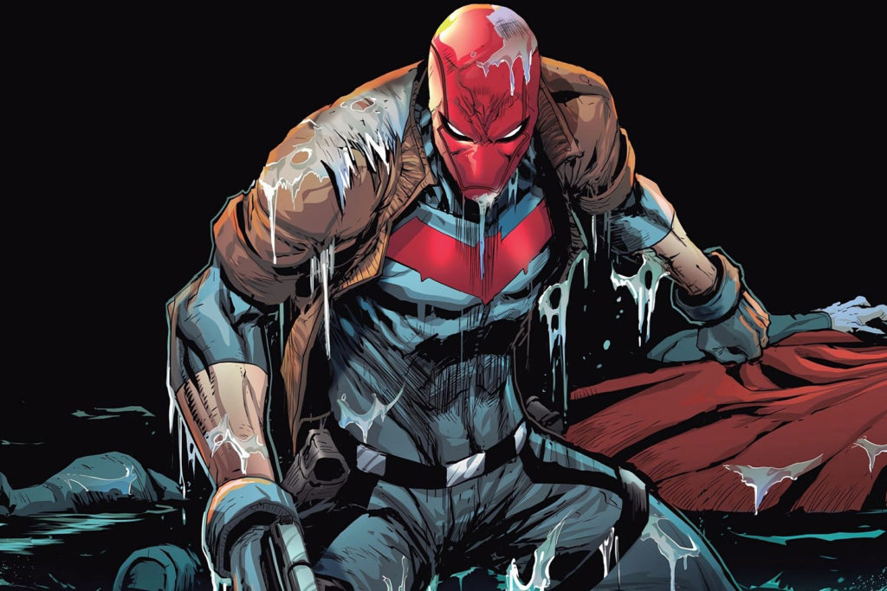Jason Todd, one of the Robins, was murdered by the Joker. When Superboy-Prime altered reality, Jason returned from the grave. After he was enraged that Batman didn't avenge him, Jason located the Joker, stole the Red Hood outfit (but not before he beat him brutally), and took up the mantle of the second Red Hood.
Red Robin
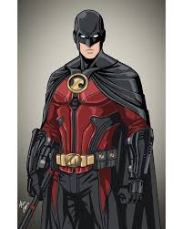After a series of events involving Tim's mother's death and his father's paralysis, and Tim rescuing Batman in an encounter with the Scarecrow, Batman eventually enlisted him as the third Robin at the age of fourteen.
Robin
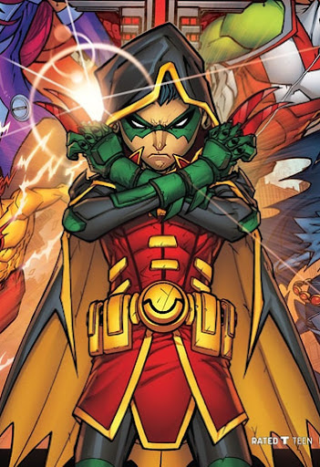Damiam Wayne son batman.Damian's origin was unknown to Batman. Damian was genetically perfected and grown in an artificial womb to be the perfect warrior. He is raised by his mother Talia al Ghul and the League of Assassins.
Huntress

The Huntress, also known as Helena Wayne, is a superheroine appearing in American comic books published by DC Comics. The character is the daughter of the Batman and Catwoman (Selina Kyle) of an alternate universe established in the early 1960s and referred to as "Earth-Two", where the Golden Age stories took place..
Bat Wing
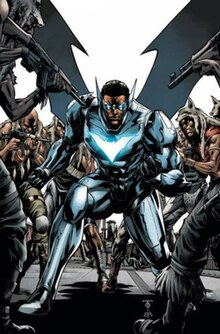David Zavimbe operates as Batwing who is a representative of Batman Incorporated from the city of Tinasha, within the Democratic Republic of Congo. When David Zavimbe was a young boy in Tinasha, his parents died of HIV/AIDS very early in his life.
bat women
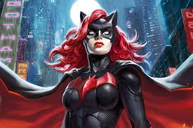Clad in the Hebrew colors of war, former West Point Academy cadet Kate Kane is Batman's cousin, but she fights a battle all her own against injustice. Bruce Wayne was robbed of both of his parents when he was just a small child, but his work as Batman has inspired those more fortunate than he was to follow his lead.
batman-beyond
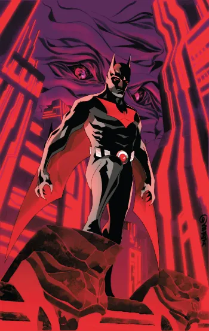Terry McGinnis, the future Batman, now a seasoned hero, and his mentor Bruce Wayne, the former Batman, dealing with their straining relationship over the demands of the role of Batman, as a new killer emerges with ties to the original Dark Knight's past.
Allies
Commissioner James Gordon
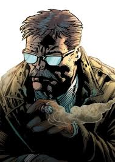Gotham City's police commissioner and Batman's most trusted ally in law enforcement.
Lucius Fox
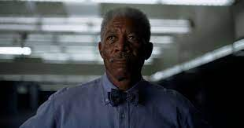CEO of Wayne Enterprises and the supplier of Batman's advanced technology and equipment.
DC Superhero Teams
Justice League
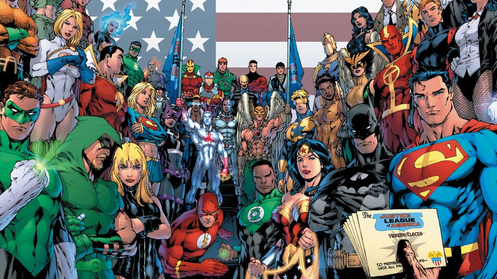Earth's premier team of superheroes, including Batman, Superman, Wonder Woman, and more.joined together to save the world from villains
- Batman
- Superman
- Wonder Woman
- The Flash
- Green Lantern
- Aquaman
- Cyborg
Teen Titans
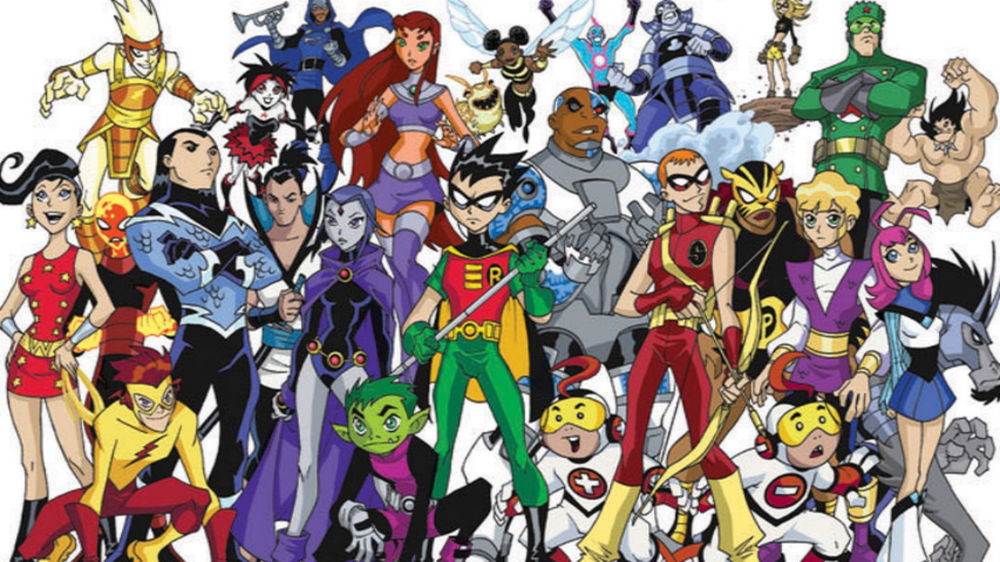Leading the Teen Titans to protect Earth is Robin, formerly Batman's sidekick. He has no special powers, just a utility belt and his mind to help solve problems. His team members, Starfire, Raven, Cyborg and Beast Boy, live together in Titans Tower, situated in the West Coast haven Jump City. Each of them possesses unique abilities to help fight a new generation of villains ranging from super-powered hooligans to would-be world conquerors.
Suicide Squad
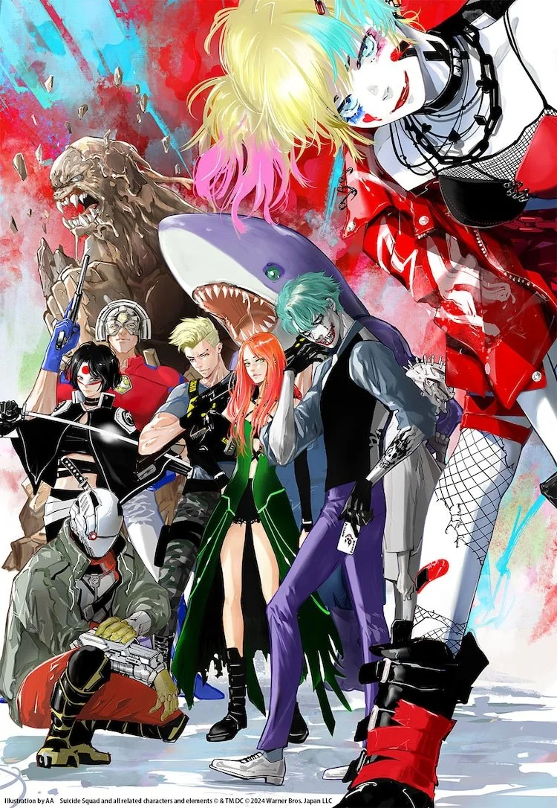Amanda Waller assembles a team of imprisoned supervillains to execute dangerous black-ops missions. When an ancient witch threatens to destroy mankind, the squad is tasked with stopping her.
Other Versions of Batman
The Dark Knight Returns
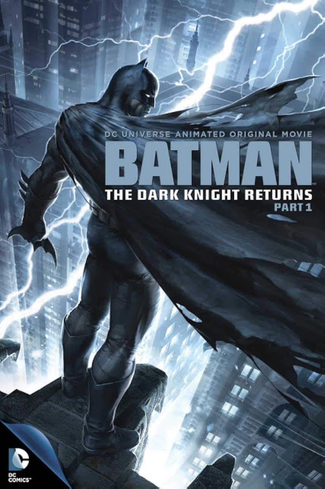It tells an alternative story of Bruce Wayne, who at 55 years old returns from a decade of retirement to fight crime while facing opposition from the Gotham City police force and the United States government.
Batman Beyond
Under supervision of an elderly Bruce Wayne, he fights crime in a harsh, futuristic Gotham. At least forty years after the "current" adventures of Batman and twenty years after Bruce Wayne (Kevin Conroy) retired from the role, his secret is discovered by troubled teen Terry McGinnis (Will Friedle).
The darkest knight
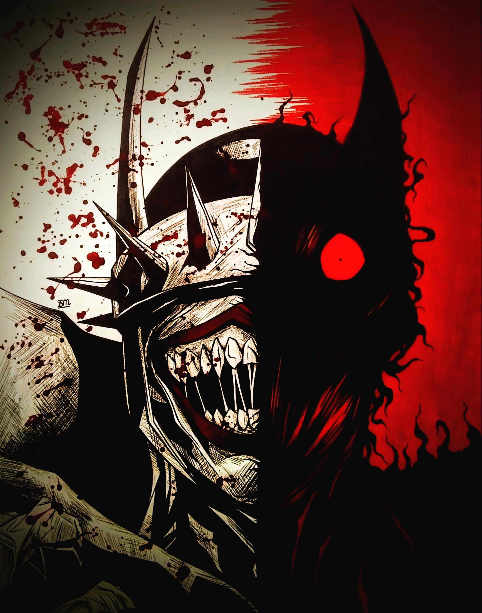The Darkest Knight is The Batman Who Laughs. After getting almost killed by The Chainsaw Of Truth TBWL's brain was transferred into Bat-Manhattan. Then he took new powers & a form-The Darkest Knight.
Batman Movie Timeline
Batman: The Movie (1966)
Starring Adam West as Batman
Batman (1989)
Directed by Tim Burton, starring Michael Keaton
Batman Returns (1992)
Directed by Tim Burton, starring Michael Keaton
Batman Forever (1995)
Directed by Joel Schumacher, starring Val Kilmer
Batman & Robin (1997)
Directed by Joel Schumacher, starring George Clooney
Batman Begins (2005)
Directed by Christopher Nolan, starring Christian Bale
The Dark Knight (2008)
Directed by Christopher Nolan, starring Christian Bale
The Dark Knight Rises (2012)
Directed by Christopher Nolan, starring Christian Bale
Batman v Superman: Dawn of Justice (2016)
Directed by Zack Snyder, starring Ben Affleck
Justice League (2017)
Directed by Zack Snyder, starring Ben Affleck
The Batman (2022)
Directed by Matt Reeves, starring Robert Pattinson
The Batman (2022)
Directed by Matt Reeves, starring Robert Pattinson
Gallery